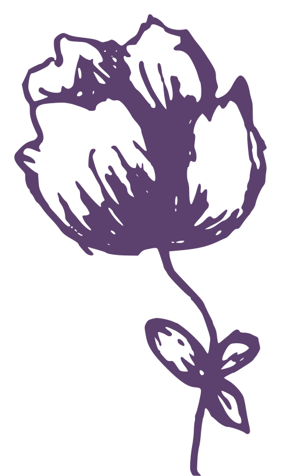

we delight in the beauty of the butterfly, but rarely admit the changes it has gone through to achieve that beauty.
— Maya Angelou
about me
hello everyone! i'm yohali--
a rising junior at the university of illinois at urbana-champaign, pursuing a b.s. in computer science. i love to read, write, explore and create. taking a tiny idea to a complete, full-scale project is one of the most satisfying parts of studying computer science. there's real value in sitting with confusion, analyzing code, and taking your time to craft something that's completely yours. currently, i work as a technical project management intern at synchrony financial, where the best part is supporting features end-to-end and watching that same process come to life. this is just the start — i hope to keep documenting my growth here so you can follow along. keep scrolling to learn more about what i love to do and create.
experience & campus involvement
synchrony financial emerging technology center - technical project management intern
January 2026 – Present
I serve as a project management intern on the emerging payments team at Synchrony, supporting the end-to-end execution of software projects. My responsibilities include maintaining project documentation, facilitating daily and weekly stand-ups, and tracking a rolling action items list. I also help define project vision and timelines, coordinate communication across teams, and conduct research to support ongoing initiatives.
parasol robotics laboratory @ uiuc - undergraduate research assistant
August 2025 – January 2026
During my time in this lab, I completed the robotics crash course and contributed to ongoing research in robotic motion planning, including reading and annotating relevant literature. I attended weekly lab meetings and presented prior research findings at the UIUC undergraduate research symposium. My profile is featured on the lab's website here.
illinois math & science academy - computer science + x camp ta
June 2026
I served as a teaching assistant for a UIUC-sponsored summer camp at IMSA, working alongside a UIUC graduate student to deliver lessons based on UIUC's CS + X program, spanning disciplines such as linguistics, music, and mathematics. Together, we developed interactive lessons and hands-on challenges, while supporting incoming high school students throughout their learning.
kappa theta tau professional engineering fraternity - technology chair & family officer
August 2024 – Present
As technology chair (current), I oversee the organization's digital infrastructure, including maintaining our website and developing new features. As family officer (fall '25), I planned family-centered events for potential new members, and worked closely with the new member educator to design engaging activities throughout the pledge process.
national society of black engineers @ uiuc - outreach committee & volunteer
August 2024 – Present
I participate in outreach efforts that showcase UIUC engineering to minority high school students, including multiple high school visitations where I serve as a panelist and mentor. I helped plan our largest visitation of the year this past spring and regularly attend weekly committee meetings.